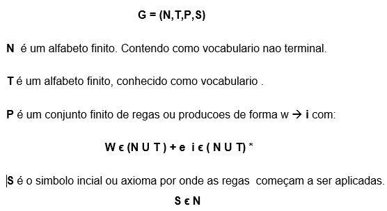

Gramática Formal
A gramática formal também chamada de gramática é um objeto matemático que permite especificar uma linguagem ou língua, ou seja um conjunto de regras de formação de cadeias numa linguagem formal.
As regras descrevem como formar as cadeias do alfabeto da linguagem que são validos de acordo com a sintaxe da linguagem. Uma gramática não descreve os significados das cadeias ou o que pode ser feito com elas em qualquer contexto
Uma gramática formal é uma quadrupa onde :
G = (N,T,P,S)
